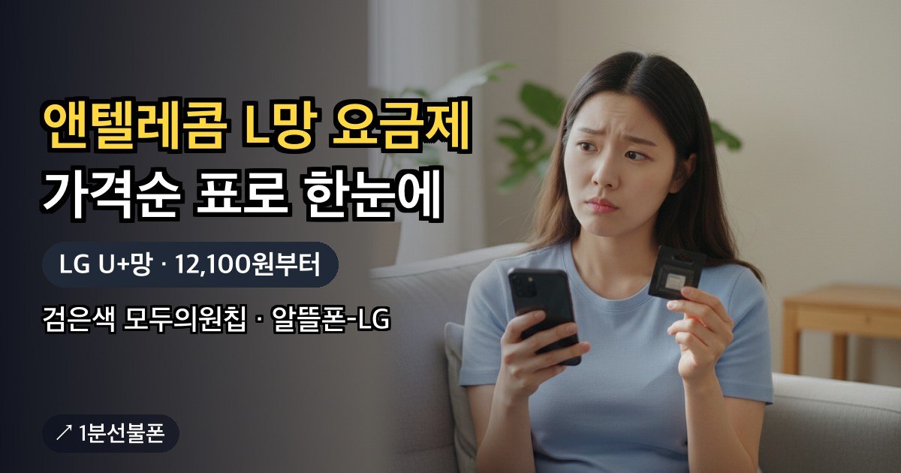

세컨폰 요금제는 두 번째 번호를 어디에 쓰는지부터 정하면 고르기 쉽습니다. 받기만 하거나 인증 문자용이면 월 12,100원부터, 통화 위주면 월 20,800원 L망 선불 300분이나 33,000원 라이트, 데이터 위주면 월 39,600원 10.3GB 요금제가 출발점입니다. 아래 표는 모두 약정 없이 충전해서 쓰는 앤텔레콤 선불 요금제이고, 개통 순서는 따로 정리한 글로 연결해 두었습니다.
- 받기만 하거나 인증 문자용이면 K망·L망 모두 월 12,100원부터 시작
- 와이파이 중심으로 데이터를 조금만 쓰면 월 17,000원 L망 선불 데이터 2.5GB
- 통화 위주는 분수가 정해진 요금제(20,800원 L망 선불 300분 등)와 음성·문자 기본제공 요금제(33,000원 라이트)로 나뉨
- 데이터 위주는 39,600원 10.3GB, 45,900원 20.3GB(K망), 46,400원 5G 20GB+(L망) 순으로 비교
- 요금제의 망과 유심의 망을 맞추고, 고른 요금제는 신청 화면에서 다시 선택
- 드는 돈은 유심 6,600~8,800원과 월 요금, 가입비 없음
두 번째 번호의 쓰임새부터 정하면 후보가 세 갈래로 줄어듭니다
앤텔레콤 선불 요금제는 K망(KT 통신망)과 L망(LG U+ 통신망)을 합쳐 수십 가지라서, 가격표를 위에서부터 읽으면 오래 걸립니다. 세컨폰은 본래 쓰는 폰이 따로 있으니 두 번째 번호가 맡을 일 하나만 정하면 됩니다.
| 쓰임새 | 먼저 볼 칸 | 출발점 |
|---|---|---|
| 받기만·인증 문자용 | 월 요금 | 12,100원부터 시작하는 기본 요금제 |
| 통화 위주 | 음성 분수와 부가통화 | L망 선불 300분(20,800원), 300MB 라이트(33,000원) |
| 데이터 위주 | 데이터 용량과 소진 후 속도 | 396 10.3GB(39,600원) |
개통 자체는 유심이 있으면 5분이라, 시간이 더 드는 쪽은 요금제 고르기입니다. 공기계 준비와 신청 순서는 세컨폰 개통 글에 있으니 이 글에서는 요금제만 봅니다.
받기만 하거나 인증 문자용일 때 보는 소량 요금제
전화와 문자를 주로 받기만 하거나 인증 문자를 받는 번호로 둘 생각이라면 월 요금이 낮은 순서로 보면 됩니다. 두 망 모두 최저가는 12,100원부터입니다.
| 요금제 | 월 요금 | 음성 | 문자 | 데이터 |
|---|---|---|---|---|
| 선불 LTE기본1(K망) · L망 선불 기본1(L망) | 최저, 12,100원부터 | 50분 | 30건 | 300MB |
| 선불 LTE기본2(K망) | 15,400원 | 50분 | 30건 | 500MB |
| L망 선불 데이터 2.5GB(L망) | 17,000원 | 100분 | 50건 | 2.5GB |
| 선불 LTE실속데이터1(K망) | 21,890원 | 50분 | 30건 | 1GB |
- 번호만 두고 거의 쓰지 않는다면 — 맨 윗줄의 최저 요금제로 충분한지부터 봅니다.
- 집이나 사무실 와이파이에서 주로 쓴다면 — 월 17,000원에 데이터 2.5GB인 L망 요금제가 있습니다. L망이라 유심도 L망용으로 준비해야 합니다.
번호를 살려 두는 것만이 목적이라면 번호 유지 요금제 글을, 유심값까지 더한 첫 달 비용은 가장 저렴한 선불폰 글을 함께 보세요.
세컨폰으로 전화를 많이 건다면 — 분수형과 기본제공형
업무 전화처럼 두 번째 번호로 거는 통화가 많다면 음성 칸을 먼저 봅니다. 한 달 분수가 정해진 요금제와 음성·문자가 기본제공인 요금제로 나뉩니다.
| 요금제 | 월 요금 | 음성 | 문자 | 데이터 |
|---|---|---|---|---|
| L망 선불 300분(L망) | 20,800원 | 300분 | 300건 | 300M(최대 400Kbps 속도제어) |
| LTE 24(K망) | 26,400원 | 160분 | 200건 | 750MB |
| LTE 28(K망) | 30,800원 | 200분 | 200건 | 1.5GB |
| 선불 300MB 라이트(K망) | 33,000원 | 기본제공(+영상/부가 30분) | 기본제공 | 300MB(이후 최대 1Mbps) |
| L망 선불 300M 라이트(L망) | 33,000원 | 기본제공(+영상/부가 50분) | 기본제공 | 300M(최대 1Mbps 속도제어) |
| LTE 42(K망) | 46,200원 | 350분 | 350건 | 6GB |
- 통화량이 한 달 300분 안쪽이라면 — 20,800원 L망 선불 300분이 분수형 가운데 월 요금이 가장 낮습니다.
- 통화량을 가늠하기 어렵다면 — 33,000원 라이트 두 가지가 음성·문자 기본제공입니다. 망에 따라 영상/부가 분수가 30분과 50분으로 다릅니다.
기본제공 요금제라도 전국 대표번호나 영상통화는 따로 주어진 부가통화 분수에서 빠지고, 그 분수를 넘기면 추가요금이 생깁니다. 거래처 대표번호로 자주 건다면 이 칸까지 확인하세요. 빠지는 통화의 종류는 통화 무제한 선불폰 글에 정리돼 있습니다.
세컨폰에서 데이터까지 쓴다면 — 10GB급, 20GB급, 그 이상
두 번째 폰으로 영상이나 지도, 메신저까지 쓴다면 데이터 용량과 소진 후 속도를 같이 봅니다.
| 요금제 | 월 요금 | 음성·문자 | 데이터 |
|---|---|---|---|
| LTE 선불 396 10.3GB(K망) | 39,600원 | 기본제공(+영상/부가 30분) | 10.3GB(이후 최대 3Mbps) |
| L망 선불 396 10.3GB(L망) | 39,600원 | 기본제공(+영상/부가 50분) | 10.3GB(이후 최대 3Mbps) |
| LTE 선불데이터10G(K망) | 45,000원 | 100분 · 100건 | 10GB |
| LTE 선불 459 20.3GB(K망) | 45,900원 | 기본제공(+영상/부가 30분) | 20.3GB(이후 최대 3Mbps) |
| L망 5G 선불 20GB+(L망) | 46,400원 | 기본제공(부가/영상 50분) | 20GB(이후 최대 3Mbps) |
| LTE 선불선택 770(K망) · L망 선불 770(L망) | 77,000원 | 기본제공(+영상/부가 K망 200분, L망 300분) | 11GB+일 2GB(이후 최대 3Mbps) |
| LTE 비디오(K망) | 85,900원 | 기본제공(+영상/부가 300분) | 100GB(이후 최대 5Mbps) |
- 10GB급 — 39,600원 10.3GB는 두 망에 다 있고, 영상/부가 분수만 30분과 50분으로 다릅니다.
- 20GB급 — K망은 45,900원 20.3GB, L망은 46,400원 5G 20GB+입니다. 5G 요금제는 5G 단말과 이용 조건을 확인해야 합니다.
- 그 이상 — 77,000원과 85,900원 요금제가 있습니다.
K망에는 월 39,600원에 데이터가 300MB인 「LTE 선불 396」도 있어서 이름 끝의 용량까지 읽어야 합니다. 두 요금제의 차이는 앤텔레콤 K망 글에, 소진 후 속도에 대한 설명은 데이터 무제한 선불폰 글에 있습니다. 속도는 최대치이고 실제 체감은 단말기·장소·망 상태에 따라 달라집니다.
요금제를 정한 뒤 신청 전에 맞춰 둘 것
- 요금제의 망과 유심의 망을 맞춥니다. K망 요금제면 민트색 바로유심(CU·GS25·이마트24), L망 요금제면 검은색 모두의원칩(이마트24·B마트·지하철 역 자판기)입니다. CU·GS25에는 L망 유심이 없습니다. 유심이 없으면 신청 페이지에서 택배·퀵 배송으로 받을 수 있습니다.
- 신청 화면에서 요금제를 다시 고릅니다. 이 사이트에서 본 요금제는 신청서로 자동 전달되지 않으니, 이름과 월 요금을 적어 두었다가 그대로 선택하세요.
- 드는 돈을 더해 봅니다. 편의점 유심 6,600~8,800원에 고른 요금제의 월 요금이 듭니다. 선불은 가입비 없음, 약정·위약금 없음입니다.
- 비대면으로 신청할 수 있는지 봅니다. 본인 명의 간편인증서(웹은 토스·카카오 등)가 있어야 하고, 간편인증서가 없는 경우에는 센터를 방문해 개통합니다.
- 개통한 날의 두 가지를 챙깁니다. 웹으로 직접 개통했다면 본사 확인 전화(해피콜)가 그날 안에 걸려 오고(공휴일 제외), 이 전화를 받지 못하면 번호가 해지될 수 있습니다. 충전도 개통한 날을 넘기지 마세요.
표에 실은 요금제는 일부입니다. 전체 목록은 요금제 비교에서, 유심 구매 전 확인 목록은 유심 준비 안내에서 볼 수 있습니다. 세컨폰이 아닌 일상용 폰의 요금제는 선불폰 요금제 추천 글에서 다룹니다.
자주 묻는 질문
세컨폰 요금제 중에 제일 싼 건 얼마예요?
약정 없는 선불 기준으로 K망·L망 모두 월 12,100원부터입니다. 구성은 음성 50분, 문자 30건, 데이터 300MB이고 유심값 6,600~8,800원은 따로 듭니다.
세컨폰 요금제도 약정을 걸어야 하나요?
아닙니다. 이 글의 요금제는 모두 약정 없이 충전해서 쓰는 선불이라 약정·위약금 없음, 가입비 없음입니다.
세컨폰은 K망이랑 L망 중에 어느 쪽 요금제가 유리한가요?
쓰임새에 따라 다릅니다. 최저가는 두 망 모두 12,100원부터이고 39,600원 10.3GB도 양쪽에 있습니다. 300분 통화형(20,800원)과 5G 20GB+는 L망에, 20.3GB(45,900원)는 K망에 있습니다. 망을 정했으면 유심도 같은 망으로 준비하세요.
세컨폰으로 전화만 하는데 300분짜리랑 라이트는 뭐가 달라요?
L망 선불 300분은 월 20,800원에 음성 300분·문자 300건으로 양이 정해져 있습니다. 33,000원 라이트는 음성·문자가 기본제공이고 영상/부가통화 분수가 따로 붙습니다. 한 달 통화가 300분 안쪽이면 앞쪽, 가늠하기 어려우면 뒤쪽을 보세요.
표에 없는 요금제도 세컨폰에 쓸 수 있나요?
네. 이 글의 표는 쓰임새별로 일부만 추린 것이고 전체 목록은 요금제 비교 페이지에 있습니다. 최종 요금과 제공 조건은 신청 화면에서 다시 확인하고 선택하세요.
같이 보면 좋은 글

앤텔레콤 L망 요금제 — 12,100원부터 가격순 표와 검은색 모두의원칩 구하는 곳
앤텔레콤 L망 요금제는 LG U+ 통신망을 빌려 쓰는 선불 요금제로, 월 12,100원부터 85,900원…

선불폰 요금제 추천 — 인증용·일상·5G·대용량, 목적별 고르는 법
선불폰 요금제는 한 줄로 순위를 매기기보다 이 번호로 무엇을 할지부터 정해야 고르기 쉽습니다. 인증 문자만…

번호 유지 요금제, 통화 안 해도 번호만 남기는 법
번호 유지 요금제를 찾는다면 통화·데이터가 많이 필요한 게 아니라 번호 자체를 잃지 않는 게 목적일…

5g 선불요금제 — L망 5G 선불 20GB+ 하나, 5G 폰과 유심 준비까지
앤텔레콤 선불에서 5G 요금제는 LG U+망(L망)의 「L망 5G 선불 20GB+」 한 가지이고 월…
최종 업데이트: